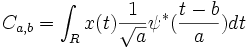

Diese Funktion berechnet den realen kontinuierlichen Wavelet-Koeffizienten für jede gegebene Skalierung, die im Vektor Skalierung und jeder Position b von 1 bis n dargestellt wird, wobei n die Größe des Eingabesignals ist.
Angenommen x(t) ist das Eingabesignal und ? die gewählte Wavelet-Funktion, dann ist der kontinuierliche Wavelet-Koeffizient von x(t) bei der Skalierung a und der Position b:

Das Ergebnis kann in einem Bereich eines Worksheets und, wenn Sie das Kontrollkästchen Koeffizientenmatrix aktiviert haben, einer Matrix ausgegeben werden. Der Ausgabebereich eines Worksheets besteht aus m Spalten, von denen jede n Zeilen hat, wobei m die Größe des Vektors Skalierung ist. Jede Spalte entspricht einer Skalierung, und jede Zeile entspricht einer Position. Andererseits besitzt die Ergebnismatrix, wenn Sie eine erzeugen möchten, n Spalten und m Zeilen. Der Wert in einer Zelle, deren Zeilennummer M0 und Spaltenummer N0 ist, ist der Koeffizient der Skalierung M0 und der Position N0.
Es werden drei Wavelet-Typen in dieser Funktion unterstützt, einschließlich Morlet, Mexican Hat und die Ableitung der Gauss-Wavelets.
Das Morlet-Wavelet wird definiert als:
, wobei k die Wave-Anzahl ist.
Die Mexican Hat-Wavelet ist:
Und die Gauss-Wavelet ist die p-te Ableitung der Gauss-Funktion, die definiert wird als:
, wobei p die Ableitungsordnung ist.